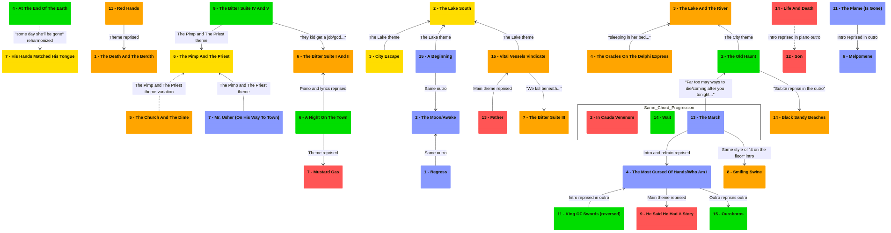

Riassunto traccia per traccia degli Atti 1-5
Table of Contents
- 1. Act 1 - The Lake South, The River North
- 2. TODO Act 2 - The Meaning Of, And Everything Regarding Ms. Leading
- 2.1. The Death And The Berth
- 2.2. The Procession
- 2.3. The Lake and The River
- 2.4. The Oracles On The Delphi Express
- 2.5. The Church and The Dime
- 2.6. The Bitter Suite I and II - Meeting Ms. Leading and Through The Dime
- 2.7. The Bitter Suite III - Embrace
- 2.8. Smiling Swine
- 2.9. Evicted
- 2.10. Blood Of The Rose
- 2.11. Red Hands
- 2.12. Where The Road Parts
- 2.13. Dear Ms. Leading
- 2.14. Black Sandy Beaches
- 2.15. Vitals Vessels Vindicate
- 3. TODO Act 3 - Life And Death
- 4. TODO Act 4 - Rebirth In Reprise
- 4.1. Rebirth
- 4.2. The Old Haunt
- 4.3. Waves
- 4.4. At The End Of The Earth
- 4.5. Remembered
- 4.6. A Night On The Town
- 4.7. Is There Anybody Here
- 4.8. The Squeaky Wheel
- 4.9. The Bitter Suite IV and V - The Congregation and The Sermon In The Silt
- 4.10. The Bitter Suite VI - Abandon
- 4.11. Kings Of Swords (Reversed)
- 4.12. If All Goes Well
- 4.13. The Line
- 4.14. Wait
- 4.15. Ouroboros
- 5. TODO Act 5 - Hymns With The Devin In Confessional
- 5.1. Regress
- 5.2. The Moon/Awake
- 5.3. Cascade
- 5.4. The Most Cursed Of Hands/Who Am I
- 5.5. The Revival
- 5.6. Melphomene
- 5.7. Mr. Usher (On His Way To Town)
- 5.8. The Haves Have Naught
- 5.9. Light
- 5.10. Gloria
- 5.11. The Flame (Is Gone)
- 5.12. The Fire (Remains)
- 5.13. The March
- 5.14. Blood
- 5.15. A Beginning

L'intera struttura degli Atti ricorda una rappresentazione teatrale, divisa in 5 parti. Ogni Atto è quindi un pezzo della storia che ha una significatività a livello di trama, in cui personaggi, luoghi e avvenimenti evolvono per far progredire la storia.
In pratica, questo significa che mentre ogni Atto ha le proprie caratteristiche che lo separano dagli altri (composizione, scelte stilistiche, tematiche trattate), ciascuno fa comunque parte di una storia coesa (personaggi, temi, leitmotifs e rimandi tra di essi).
Ogni storia ha i propri personaggi. Il protagonista degli Atti è Hunter, mentre l'antagonista (principale e non sempre presente) lungo tutta la storia è il Prete-Pappone ("The Pimp And The Priest").
La dualità di persone e cose è un elemento costante attraverso gli Atti , quindi è bene tenere a mente che se una cosa è importante a livello di trama, ci sarà sempre una cosa ad essa associata.
1. Act 1 - The Lake South, The River North
L'Atto 1 è l'introduzione a tutti gli altri atti. Qui vengono introdotti tutti i personaggi principali, luoghi e tempo dell'ambientazione; inoltre viene impostato il tono della storia.
1.1. Battesimo Del Fuoco
Believe you me: the price is clear
A child born, the mother near
To death and life as hand in hand
A failed life exposed the man
Who led her off into the flame
To cast her back to Hell again
But hear you me: the break of dawn
Will wash away the sins thereof
Unto the lake beyond the tree
The child waits, alone is he
The flame is gone, the fire remains
The flame is gone, the fire remains
The flame is gone, the fire remains
The flame is gone, the fire remains
The flame is gone, the fire remains
The flame is gone, the fire remains
L'intera canzone non solo è un'introduzione e riassunto degli avvenimenti alla fine dell'Atto 1, ma anche una dell'intera opera divisa in 6 parti, con una probabile anticipazione del finale.
Il possibile narratore di questa suppongo sia uno (o più) degli Oracoli, figura che farà la comparsa effettiva nell'Atto 2. Spiegherò il perchè penso sia così in quella sezione.
Nel primo verso si spiega come una madre porta alla luce un figlio e come questo sia una sorta di sciagura sui due, uno nella vita e l'altra nella morte. Si spiega come un uomo, il quale ha già trascinato la madre fuori dalla miseria per portarla nella fiamma dell'inferno, ovvero dopo la morte, porterà sofferenza e miseria nella vita del figlio.
Tuttavia nel secondo verso il tono cambia: l'alba laverà via i peccati di entrambi. Non è ancora chiaro il significato dell'alba e del lavare via i peccati, però il figlio aspetta presso il Lago oltre l'Albero, tutto solo.
Il finale introduce per la prima volta il tema della fiamma che svanisce, mentre il fuoco continua a bruciare. In questo frangente racconta come il tutto è iniziato in modo molto rocambolesco e, seppure le cose si sono un po' calmate, non è del tutto finito.
1.2. The Lake South
Questa è una canzone strumentale che però è importantissima: introduce per la prima volta il tema del Lago, primo dei numerosi leitmotifs della storia.
Vista la diretta corrispondenza con titolo e melodia, è importante tenere a mente cosa implica sentirla in determinanti momenti durante gli Atti.
È importante ricordare anche che qualsiasi riferimento al Lago in particolare: infatti è considerato simbolo di innocenza e purezza.
1.3. City Escape
[Verse 1]
Please, what happened to the flame?
(It burned down the sides)
With a fondness for cooking history
Revealing thoughts of Ms. Terri
In the heat of the night
A woman wealthy of a parous plight erased a harlot's life
(With the moon at her back, unaware of what could be)
[Refrain]
Plagued by practical and a mercenary lust, they tear at her skin
(Oh, the trouble began, but it never ended)
Clawing at her throat with a smell of desperate and a lack of regret
(Oh, the trouble began, but it never ended)
[Verse 2]
Free, pardoned by the flame
(That burned down the sides)
Her feet began to bleed between the seams
But she persisted to the streets
In the heat of the night
The river rendered the chance she surely needs to stay alive
[Refrain]
Plagued by practical and a mercenary lust they tear at her skin
(Oh, the trouble began, but it never ended)
Clawing at her throat with a smell of desperate and a lack of regret
(Oh, the trouble began, but it never ended)
[Bridge]
Oh, but her breath escapes her
Oh, but the pulse remains
Oh, but her breath escapes her
Oh, but her pulse remains
[Breakdown]
Places, People, the stage is set
Places, People, the stage is set
[Refrain]
Plagued by practical and a mercenary lust they tear at her skin
(Oh, the trouble began, but it never ended)
Clawing at her throat with a smell of desperate and a lack of regret
(Oh, the trouble began, but it never ended)
Plagued by practical and a mercenary lust they tear at her skin
(Oh, the trouble began, but it never ended)
Clawing at her throat with a smell of desperate and a lack of regret
(Oh, the trouble began, but it never ended)
Qui si parla di come una donna, chiamata Ms. Terri, scappa dalla Città.
Lungo la canzone ci sono una serie di botta e risposta: al narratore esterno singolo (la voce principale di Casey) si aggiungono, come per spiegare ulteriormente la storia, la voce degli Oracoli (le voci del coro). Nel testo sopra le risposte del coro sono indicate tra parentesi
Nel primo verso ritorna il tema della fiamma, qui vista come Ms. Terri che tenta di dare fuoco al bordello, per cancellare "una vita da prostituta", non sapendo esattamente cosa fare e dove andare.
Il motivo della fuga è chiaro dal ritornello: i sui clienti, malgrado la sua condizione di donna incinta, continuano a chiedergli servizi senza rimorso, con furia animalistica. Nel secondo verso, esplicitando la sua gravidanza più direttamente, indicata sempre come una fiamma, ma anche con i piedi ingrossati di una persona che deve stare molto tempo seduta, Ms. Terri trova la salvezza saltando nel Fiume. Trascinata dalla corrente, sviene: "il respiro la lascia, mentre il battito rimane".
Il Fiume la trascina sulle rive del Lago.
Importante nel breakdown quello che dice gli Oracoli, con la solita voce corale: "places, people, the stage is set", persone e luoghi sono al loro posto. La storia ha inizio.
1.4. The Inquiry Of Ms. Terri
[Verse 1]
A home removed, a life resumed right here
The Priest and the rosary
The book and the bond between he and me has long since broken
A boy who's grown, too short to see
A tale unfolds, too tall to be
A life once lived behind closed doors, the irony of the pensive whore
[Chorus]
Touch, taste, feel it ripping me down
A reprise, two times, the Dime, burn it to the ground
Ohhhh, on the ground
[Verse 2]
The inquiry of Ms. Terri
The expiry of misery
The table turns the sun long
The river bed, and he's alone
The object of affection
Conflicted by convictions of indecency, sorority
Corrupted by impropriety
The cavalier, she hopes of him
In dissonance with experience
A boy who grows, with knife in hand
To fend for her, becomes a man
But she plays fake affection, and carefully lacks objection
To her gentleman caller's twisted desires
[Chorus]
Touch, taste, feel it ripping me down
A reprise, two times, the dime, burn it to the ground
[Outro]
We dance around the room
My love, I'll carry you
And I'll teach you how to treat
That Leading lady that you'll meet
We dance around the truth
My dear, I lie for you
But when I lie down
I'm simply lying to them too
Entriamo ora nella mente di Ms. Terri, la madre, che prova a vivere una vita normale, ora che è scappata dalle grinfie del suo lavoro.
Nel primo verso spiega come il suo rapporto con il Prete, il rosario e il libro (alludendo alla Bibbia) sia dissolto, sia perché si rende conto dei peccati che ha compiuto in quanto prostituta, sia letteralmente dall'uomo che è il Prete, che viene introdotto più avanti. Il figlio, Hunter, cresce con lei ma è ancora troppo piccolo per realizzare come lavorasse sua madre. Ms. Terri inoltre ironizza su come lei viva comunque dentro casa, come le prostitute, malgrado la sua libertà.
Nel ritornello lei si ricorda di come veniva trattata nel bordello, che ora ha ufficialmente il nome di "The Dime", e si augura che bruci una seconda volta. Profeticamente, questo succederà solo nell'Atto 5 per mano di suo figlio Hunter.
Malgrado la sua libertà, si capisce dal secondo verso come lei continui lo stesso a lavorare nel bordello, probabilmente per manipolazione da parte del Pappone o per difficoltà economica. In ogni caso, suo figlio rimane lontano, nella casa nei pressi del Lago: suo figlio continua a cresce mentre lei rimane in Città durante la giornata.
Ms. Terri si chiede se per caso questa sua lontananza dal figlio e lavoro peccaminoso poi non si riversi tutto sul figlio in qualche modo. Mentre pensa ad amare suo figlio in modo genuino, non prova alcun rimorso o empatia per i suoi clienti.
Nell'outro si vede però che le preoccupazioni di Ms. Terri si traducono anche in momenti felici assieme a suo figlio, a cui insegna a ballare e a trattare bene "la donna che incontrerai", Ms. Leading. Questo è un enorme rimando alla futura amante del ragazzo, che avrà un ruolo molto importante nella storia.
Mentre ballano letteralmente allo stesso momento figurativamente i due danzano attorno alla verità del suo lavoro. Così lei mente a Hunter per proteggerlo, mentre fa lo stesso coi suoi clienti per farli sentire amati.
1.5. 1878
[Verse 1]
We've got a way, we got away and survived
Stunned by the shock and fearing what's behind
[Pre-Chorus]
Everything you thought you'd live and die for
Every reason leading you to hear all of the sounds
That trickle past your introspective ear
An attempt to discover what's behind
[Chorus]
Branches twisting, reaching for the sky
Hands extending, reaching for the
Fell in another hole
(For the night, for the knife)
Loss of control
(For the night, for the knife)
I'm in another hole
(For the night, for the knife)
Bleed myself dry
(Save my life, save my life)
[Post-Chorus]
The river
The lake
Fell in another hole
(For the night, for the knife)
Loss of control
(For the night, for the knife)
[Verse 2]
Hands conflicting clearly point their way
Stunned by the sign and fearing what it says
[Pre-Chorus]
Everything you thought you'd live and die for
Every reason leading you to hear all of the sounds
That trickle past your introspective ear
An attempt to discover what's…
[Chorus]
Fell in another hole
(For the night, for the knife)
Loss of control
(For the night, for the knife)
I'm in another hole
(For the night, for the knife)
Bleed myself dry
(Save my life, save my life)
[Post-Chorus]
The river
The lake…
Fell in another hole
(For the night, for the knife)
Loss of control
(For the night, for the knife)
I'm in another hole
(For the night, for the knife)
Bleed myself dry
(Save my life, save my life)
[Chorus]
Fell in another hole
(For the night, for the knife)
Loss of control
(For the night, for the knife)
I'm in another hole
(For the night, for the knife)
Bleed myself dry
(Save my life, save my life)
[Outro]
The river
The lake
Fell in another hole
(For the night, for the knife)
Loss of control
(For the night, for the knife)
Il titolo è un riferimento all'anno di fondazione della Chiesa-Bordello, a cui capo sta il Prete-Pappone. Non mi è chiaro se è la sua rifondazione dopo il primo rogo di Ms. Terri oppure la prima fondazione in assoluto; visti gli eventi della guerra nell'Atto 3, sono più propenso per la seconda. La data esplicita aiuta a far capire in quale periodo storico gli Atti sono ambientati.
Il racconto è narrato dal punto di vista del ragazzo e della madre allo stesso momento. Nei primi versi si ricordano come sono scappati dalla città per vivere la loro vita in disparte presso il Lago e l'Albero. Il ragazzo è cresciuto e finalmente anche a lui iniziano a sorgere dei dubbi, mentre esplora i dintorni di casa sua.
L'immagine dell'Albero è evocata tramite un rimando ai rami che si estendono verso il cielo, così come le mani del ragazzo che si estendono "oltre". Esplorando, il ragazzo si fa male, cade in buche, chiede aiuto.
Allo stesso modo egli, vista la sua esperienza fisica, non riesce a chiedere a sua madre la verità: nel secondo verso si dice come "le mani", quindi la verità, chiaramente puntano in una direzione, e ciò lascia "storditi" e "impauriti" da quello che queste dicono. Le mani come simbolo tornano in momenti successivi negli Atti.
1.6. The Pimp And The Priest
[Intro]
(Take me to the river
Take me to the river)
[Verse 1]
The pimp and the priest pounce on quickened cats' feet
For the freshest young blood, innocence for the feast
The book will then brew what the sinful commit
While the pimp and priest prey quietly where the precious sinners sit
[Pre-Chorus]
Confess, oh, confess
In the chapel or brothel where we suffocate stress
We've got the time if you've got the scratch
(Conquer your sins while she screams on her back)
[Chorus]
Faster, save me
How the sins remain hostage
Harder, I can't breathe
[Verse 2]
Now the priest and the pimp are already equipped
With an enigmatic frontage posts "we welcome walk-ins"
So we corner our pace and make quick for the door
To be prodded and passed from the bed to the floor
[Pre-Chorus]
Confess, oh, confess
In the chapel or brothel where we suffocate stress
We've got the time if you've got the scratch
(Conquer your sins while she screams on her back)
[Bridge]
Take me to the river
Take me to the river
[Chorus]
Faster, save me
How the sins remain hostage
Harder, I can't breathe
[Interlude]
Sing softly, sing 'em to the lake
Sing softly, bring 'em to the lake
(x4)
Sing softly, sing 'em to the lake
Sing softly, bring 'em to the lake
(x8)
[Chorus]
Faster, save me (Take me to the river)
How the sins remain hostage
Harder, I can't breathe (Take me to the river)
Faster, save me (Take me to the river)
How the sins remain hostage
Harder, I can't breathe (Take me to the river)
[Outro]
Sing softly, sing 'em to the lake
Sing softly, bring 'em to the lake
(x4)
Qui vengono introdotti il personaggio antagonista principale del Prete e del Pappone, che si rivelano essere la stessa persona.
Durante il giorno interpreta la figura del Prete, mentre la sera si dedica come Pappone del bordello. La dualità non è solo presente nel personaggio ma anche nel luogo delle sue predicazioni: la chiesa è sia luogo di culto, di assoluzione dei propri peccati, sia un bordello, un luogo di sfogo.
Nel testo sono presenti numerosi passaggi e tematiche diverse:
- Nei versi si spiega chi è e come agisce il Prete-Pappone. Attraverso i soldi del bordello e le offerte in chiesa si arricchisce, assumendo la funzione sia di tentatore che di ciarlatano.
Manipola la gente offrendo loro sfogo nel bordello e contemporaneamente la salvezza dai propri peccati in chiesa, creando una sorta di circolo vizioso; - Nel ritornello è presente la natura interscambiabile del tema sessuale e di assoluzione: "harder, faster" contrapposto a "save me";
- Il tema della salvezza, ovvero di "portare le persone" al Lago, ovvero verso l'innocenza "portandole al Fiume". Il Fiume, scorrendo verso il Lago, è simbolo di "lavare via i peccati" per ritornare all'innocenza. Questo verrà ripreso come parallelo tra il Prete-Pappone e Mr. Usher nell'Atto 5, che "porta le persone al Fiume" per un altro motivo più sinistro.
Non viene mai rivelata la motivazione del Prete-Pappone in questa fase degli Atti, se non quella di arricchirsi; viene solo spiegato il suo modus operandi.
La canzone introduce l'importante tema del Prete-Pappone, udibile nell'introduzione.
1.7. His Hands Matched His Tongue
[Verse 1]
A long walk home, riddled with regret
Uncommonly comfortable, but still I believe
That in time I think I'll see just what's been weighing down on me
An unearthly void collapsed, exposing what was trapped
To release this serendipitous design
[Verse 2]
The smell of smoke, the evening sky was bruised
Belated conversations saturate anticipation for the answers that simply won't come
But not I, I won't ask
Forget my place amongst the grass
The leaves and the trees remember me
And in my naïveté it might be seen
The pail has leaks and even if
You put all your water into it
You end up with nothing left to drink
The well has gone dry and I with it
[Chorus]
Oh, someday she'll be gone
Oh, someday she'll be gone
Oh, someday she'll be gone
Oh, someday she'll be gone
[Post-Chorus]
(We'll still have a song to sing
We'll still have a song to sing
We'll still have a song to sing
We'll still have a song to sing)
[Outro]
Sing softly, bring me to the lake
Sing softly, sing me to the lake
(We'll still have a song to sing) (Oh, someday she'll be gone)
Sing softly, bring me to the lake
Sing softly, sing me to the lake
(We'll still have a song to sing) (Oh, someday she'll be gone)
Sing softly, bring me to the lake
Sing softly, sing me to the lake
(We'll still have a song to sing) (Oh, someday she'll be gone)
Sing softly, bring me to the lake
Sing softly, sing me to the lake
(We'll still have a song to sing) (Oh, someday she'll be gone)
Si ritorna sul tema più introspettivo di Hunter, che ha moltissime domande per sua madre ma non ha il coraggio di farle.
Nel primo verso Hunter percepisce un po' di peso nei confronti del comportamento di sua madre, anche se non sa dargli una motivazione, ma crede che con il tempo tutte le domande avranno una risposta.
Nel secondo verso, Hunter attivamente parla con sua madre, ma non trova mai il coraggio di chiedere. Hunter spiega che sceglie attivamente di rimanere ignorante nei confronti del mondo. Segue una metafora con un secchio, in cui Hunter rappresenta il secchio che, anche se viene riempito dall'amore di sua madre, poiché è comunque crepato dal passato, non sarà mai pieno del tutto. Aggiunge che inoltre eventualmente si asciugherà, quando sua madre non ci sarà più.
"Oh, some day she'll be gone": realizza che il tempo che ha con sua madre non è infinito e che prima o poi anche lei lo lascerà. Con lei anche le sue risposte alle domande svaniranno.
Il coro di risposta, degli Oracoli, ribadisce che "avremo sempre una canzone da cantare", prevedendo che la morte della madre sarà il catalizzatore per il resto degli Atti.
Il finale riprende "The Pimp And The Priest", con il tema di riportare tutto all'innocenza.
Questa è la prima di due canzoni un cui è presente la simbologia delle mani nel titolo. Le mani, simbolo di verità, in questo caso sono associate alla lingua del ragazzo, indicano la coerenza delle azioni del ragazzo. Questa viene contrapposta all'altra canzone, nella quale le mani sporche indicano la parziale verità delle cose.
1.8. The River North
Strumentale. Il tema della canzone rappresenta il Fiume, ma non sono stato capace a ritrovare questo tema da nessun'altra parte.
Nel finale, si sente un'orchestra che si accorda: il finale del primo Atto è solo l'incipit della storia.
2. TODO Act 2 - The Meaning Of, And Everything Regarding Ms. Leading
2.1. The Death And The Berth
Canzone strumentale, da qui inizia il secondo degli Atti.
Il titolo è il riferimento alla morte della madre, Ms. Terri. L'album inizia quindi con la morte della madre, già anticipata nel primo degli Atti.
Musicalmente ci sono due temi che si sovrappongono: l'arpeggio di The Bitter Suite I e gli archi che suonano parte del tema di Red Hands.
Possiamo collegare il primo tema al ricordo di Hunter per la madre, mentre il secondo è un anticipazione del dolore che, così come prova qui, lo stesso proverà con Ms. Leading.
2.2. The Procession
[Verse 1]
The blood, how it paints such a scene
Foul routine, pedigree
Mouth agape, stuttered hands attempt to flail, and finally agree
Her heart ceases its rhythm
Somewhere, trumpets decay
In the front by the well, wishing wishes that deny the stale smell in the hay
[Pre-Chorus]
There, no one cry
Place these over her eyes
We are broken, alone
We are broken, alone
[Chorus]
She's inanimate; bloodless elegance
Fatal fascination breeds a bloom of misery
Helpless hiding tongues, bathed in revulsion
Here lies unfinished beauty, wilting premature
You can't be too sure
No, you can't be too sure
[Verse 2]
Reserved, always playing the part of a boy left alone
He proceeds to the road beyond the home he'd learned to call his own
[Chorus]
She's inanimate; bloodless elegance
Fatal fascination breeds a bloom of misery
Helpless hiding tongues, bathed in revulsion
Here lies unfinished beauty, wilting premature
You can't be too sure
No, you can't be too sure
[Bridge]
(One life for another, one life for another
One life for another, one life for another
One life for another, one life for another
One life for another, one life for another
One life for another, one life for another
One life for another, one life for another)
One life for another, one life for another
One life for another, one life for another
… (many times)
[Chorus]
She's inanimate; bloodless elegance
Fatal fascination breeds a bloom of misery
Helpless hiding tongues, bathed in revulsion
Here lies unfinished beauty, wilting premature
You can't be too sure
You can't be too sure
La canzone inizia con la descrizione della scena della morte della madre: un po' alla volta, le braccia si coordinano nello stare ferme, il cuore smette di battere.
Il riferimento al sangue non è un riferimento letterale al sangue di sua madre (tant'è che viene addirittura descritta in "bloodless elegance"), è piuttosto un riferimento alla morte o alla fine di un percorso in generale (vedi rispettivamente nell'Atto 5 Blood e in questo Atto Blood Of The Rose).
Il ragazzo si fa forza per non piangere durante il funerale; nel pre-chrous la frase "there put these on her eyes" si riferisce ad un'usanza presso alcune culture (tra le quali l'antica Roma) di mettere delle monete sugli occhi dei defunti durante i riti funebri.
Nel ritornello Hunter non può fare a meno di guardare sua madre che giace inerme. Si intuisce che la madre ha una morte prematura.
Il verbo "lies" può essere inteso sia come giacere, sia come mentire, poiché la madre rimane lì ed è sì distesa, ma Hunter non ha mai ricevuto risposta alle sue domande che non ha avuto il coraggio di fare.
Nel secondo verso la svolta: il ragazzo, in riservatezza, abbandona la casa e si incammina lungo la strada.
La ripetuta "one life for another" può essere intesa in questo modo: poiché la vita di Ms. Terri è finita, ora è tempo per la vita di Hunter di iniziare, con una sorta di passaggio di consegna.
2.3. The Lake and The River
[Verse 1]
Everything you'd live and die for
Reasons leading you through here
Perished matriarchal bonds, failing innocence of love
When the world beckons your approach, it swallows you whole
[Chorus]
You'll believe what you're meant to believe
In the hands of ghosts, we're never responsible
Wait to see what you're meant to see
The veil lifts when you expose your soul
[Verse 2]
Prayed I would leave this place someday
Joined to alarm from long ago, now unconcerned
Euphorically floating upon wax wings, where is the sun?
I still see her face; her beauty, her grace
Transfixed like a light in front of me
It follows my soul, and swallows me whole
[Chorus]
You'll believe what you're led to believe
In the hands of ghosts, we're never responsible
Wait to see what you're meant to see
The veil lifts when you expose your soul
[Bridge 1]
Left, right, left, right
Left, right, left, right
Left, right, left, right
[Verse 3]
His branches reached so far before
His leaves were bold extremities with great control
Wasted along; he died alone
[Chorus]
You'll believe what you're meant to believe
In the hands of ghosts, we're never responsible
Wait to see what you're meant to see
The veil lifts when you expose your soul
[Bridge 2]
She's inanimate, bloodless elegance
Fatal fascination breeds a bloom of misery
Helpless hiding tongues, bathed in revulsion
Here lies possibility, wilting premature
[Outro]
But the right hand hates the left
And the sea's upset with the sky
So we press on, press on, press on, press on
In spite of the spite
Happiness is a knife
When the world rolls on its side
And your mind's on fire
Don't you know that happiness is a knife
When the world rolls on fire?
[Transition to "The Oracles on the Delphi Express"]
Trying to find the trouble with the trouble I've found
Begging my god to make the wheels go 'round
Eat so much but I never get full
Earth opened up and swallowed us whole
Trying to find the trouble with the trouble I've found
Begging my god to make the wheels go 'round
Eat so much but I never get full
Earth opened up and swallowed us whole
Qui Hunter è all'inizio del suo viaggio che lo condurrà alla Città.
All'inizio del primo verso è dubbioso, visto che tutta la sua vita che fino a quel momento ha conosciuto dovrà cambiare. Nel ritornello si convince che con tempo imparerà e che rimpiangere troppo gli avvenimenti passati non lo porterà da nessuna parte. C'è un riferimento al "rimuovere il velo" quando una persona espone la sua anima: la sincerità fa uscire dalle persone chi sono veramente.
Nel secondo verso si spiega come Hunter aveva "pregato" (importante) per un momento come questo, di lasciare la casa e di andare oltre; tuttavia è incauto e incosciente, non sa nulla del mondo. Si chiede, "ora che ha le ali fatte di cera, dov'è il sole?", con riferimento al mito di Icaro.
Il ricordo di sua madre è ancora vivo in lui: vede il ricordo della sua bellezza e la sua faccia di fronte a sé, come una luce. Questa lo segue e lo inghiotte.
Nei successivi versi Hunter descrive la via tortuosa. Qui c'è un riferimento ai rami dell'Albero che prima arrivavano solo fino ad un certo punto.
Il secondo bridge, che è una ripresa del tema della canzone precedente, mostra come in realtà il ricordo gli causa ancora problemi, malgrado lo slancio di continuare. L'outro della canzone mostra come, amareggiato dalla morte di sua madre e dall'abbandono dei suoi luoghi d'infanzia, Hunter in questo momento ha una visione pessimistica del mondo. Paragona l'essere felici ad un coltello mentre il mondo brucia.
La transizione finale introduce la canzone seguente, con un ritmo simile ad una locomotiva. Hunter prende il treno per arrivare in Città.
Musicalmente, il tema dell'introduzione è il tema del viaggio verso la Città. Comparirà anche più avanti nell'Atto 4, dopo che Hunter ritorna indietro dopo gli avvenimenti dell'Atto 3.
2.4. The Oracles On The Delphi Express
[Verse 1]
Stick with us, throw your morals out the door
You aren't in the land of the river and the lake no more
Makeshift schemes, we've got plenty here for you
Lock away your dreams and throw away the key
[Chorus]
You've been stuck in the middle of patience and animosity
With a lust for solidity, and a cryptic history, your luck's running thin
[Verse 2]
Crimson hands brandish wounds which masquerade
If you flee from grace, your souls cannot be saved
Big steam ships, exits illustrate the flaw
Don't be ashamed of your amour faux pas
When the bombs go off you'll know right where you are
[Chorus]
You've been stuck in the middle of patience and animosity
With a lust for solidity, and a cryptic history, your luck's running thin
[Chorus]
You've been stuck in the middle of patience and animosity
With a lust for solidity, and a cryptic history, your luck's running thin
Durante il suo viaggio in treno, Hunter fa conoscenza degli Oracoli.
Seppure non è la prima volta che appaiono per l'ascoltatore, è la prima volta che entrano come personaggi nella storia; dal punto di vista musicale cantano in unisono, con delle volta un coro in secondo piano.
Gli Oracoli, in quanto entità che rompono la quarta parete, avvertono Hunter attraverso una profezia.
Dapprima lo avvertono di ascoltarlo, poiché non è più nella terra del Lago e del Fiume, letteralmente perché si sta allontanando per treno. Il significato più profondo è anche quello dell'allontanamento figurato dal Lago, l'innocenza, e il Fiume, la salvezza.
A tal proposito aggiungono che la Città è un luogo pieno di tranelli e pericoloso, gli consigliano dunque di chiudere i sogni in cassaforte e buttare via la chiave. In pratica, gli intimano di tornare indietro, perché è ancora in tempo.
Nel ritornello aggiungono, cercando di farlo ragionare, come una persona estranea, che cerca sicurezza in un luogo caotico come la Città avrà la fortuna corta.
In secondo luogo, danno una profezia più diretta:
- Mani scarlatte mentiranno e maschereranno
- Riferimento alla sua relazione futura e alla sua rottura che avrà con Ms. Leading
- Grosse navi lo faranno uscire
- Nel finale del secondo Atto uscirà dalla Città e dalla situazione attraverso una nave a vapore
- Non essere imbarazzato dalla tua avventura amorosa finita male
- Questa lo porterà a prendere scelte azzardate e sbagliate
- Quando le bombe cadranno, saprai perfettamente dove sarai
- Enorme anticipazione degli avvenimenti dell'atto 3
Hunter non farà caso a questa profezia e li lascerà perdere.
La figura dell'oracolo che non viene ascoltato proviene direttamente dal mito di Cassandra, oracolo di Delfi avente il dono della preveggenza, le cui profezie sono destinate a non essere ascoltate. Questo particolare è ulteriormente avvalorato dal nome del treno: "The Delphi Express".
2.5. The Church and The Dime
[Verse 1]
She prayed to the man with the twin in the mask
But the world is numb and cold
And the boy all alone casually wandering home
Unaware of sobering reality
[Pre-Chorus]
Faster, save me, harder, I can't
[Chorus]
Breathe in, breathe out
Let them all fold, let them all fold
Breathe in, breathe out
Let them all fold, let them all fold
[Verse 2]
Hearts finish here, love decays while call girls perform
He waits alone, playing roles to suit lovers flue
[Bridge]
The lust and the sighs, the church and the Dime
The cryptic clientele all careening inside
The puzzling façade steers pure from the divine
[Chorus]
Breathe in, breathe out
Let them all fold, let them all fold
Breathe in, breathe out
Let them all fold, let them all fold
Yeah
[Verse 3]
Many wishes of hunger were wronged
By the pimp and priest's thirst for a fault
All the anger from a lover's lament
Force fed in the stomach of sin
Welcome to the world
Hunter finalmente arriva alla Città. Qui suppongo che entri in contatto con il bizzarro edificio che è la Chiesa-Bordello.
La canzone è una descrizione dell'operato del Prete-Pappone, ripreso dall'Atto 1 ma rivisto attraverso gli occhi di Hunter.
Nel primo verso Hunter, da ragazzo semplice e inesperto che è, passa noncurante davanti all'edificio, finché non sente una voce: "Faster, save me, harder I can't…".
Vede il luogo dove l'amore decade mentre le ragazze fanno le loro performance e il Prete fa le sue funzioni da sacerdote.
Il tutto in un edificio la cui facciata a dir poco strana ("puzzling façade") che separa la purezza della salvezza dal divino, poiché è una chiesa.
Nel verso finale Hunter finalmente realizza la verità della Città: il mondo al di fuori della sua casa natale è manipolativo e pericoloso, l'apice di questo è la Chiesa-Bordello con il Prete-Pappone. Benvenuto nel mondo
2.6. The Bitter Suite I and II - Meeting Ms. Leading and Through The Dime
2.6.1. The Bitter Suite I - Meeting Ms. Leading
[Verse 1]
She had the summer's smile with winter's skin; she moved
A silhouette to serenade the soul
She spoke with words beyond me and slowly I pulled away
To receive a gesture implying an answer I didn't have
So I then smiled, responding, alarming
"Yes"
[Verse 2]
Her hands were the first that I'd ever felt; she breathed
Her lips hid her tongue from the world; she danced
To the doors, endearing, she carried me
"What's your name?"; conceding, "Ms. Leading"
She kindly suggests to her room
To rest my head, so I responded, unalarming
[Chorus]
Where's her heart, where's her heart?
Mimicking the matriarch
He's naive; blissfully
Ignorant and trusting but
[Chorus]
Where's her heart, where's her heart?
Mimicking the matriarch
He's naive; blissfully
Ignorant and trusting but now
Viene introdotto l'incontro con uno dei personaggi più importanti degli Atti, più e più volte anticipata: Ms. Leading.
Hunter la descrive come una donna dalla pelle come l'inverno e il sorriso come l'estate, che si muove leggiadramente; Hunter ne rimane folgorato e fa addirittura fatica a rispondere.
Aggiunge che le sue mani sono le prime che aveva mai sentito, ovviamente dopo quelle di sua madre, accentuando la sua solitudine da ragazzo. Implicitamente ci spiega come tutto questo sia nuovo per lui e non sa esattamente cosa fare.
Ms. Leading lo accompagna nella sua stanza e lo invita a distendersi a letto: si intuisce effettivamente chi sia Ms. Leading, ovvero una prostituta che lavora al "Dime", ma questo Hunter non lo sa.
Infatti, Hunter si chiede dove sia il suo cuore: la ragazza gli ricorda sua madre Ms. Terri, ma senza l'amore materno che la contraddistingueva. Una terza persona, forse anche Ms. Leading, aggiunge che lui è un sempliciotto e si fida molto, ma c'è un "ma" sospeso, che porta direttamente alla seconda parte.
2.6.2. The Bitter Suite II - Through The Dime
[Pimp/Priest speaks:]
Gentlemen: Presenting the very lovely ladies of the Dime
[Verse 3]
(Step right in!) Let her hips guide your desire
(Hey, kid, get a job, hey hey hey hey, kid, get a job)
(They have ways!) To satisfy, to satisfy what you require
(Touch, taste, feel, two times, the Dime)
[Pre-Chorus]
But the perks are more than price
And the guarantee is clean
("They're all clean!")
(We know what the men all want)
And they know it isn't free
[Chorus 2]
Her history is left behind
The ignorance has room to breathe
They play a part and act a scene
The prejudice, the guilty
[Verse 4]
(Take a chair!) You're not alone, the bed's your home tonight
(Hey, kid, hey kid get a job, hey hey hey hey, kid, get a job)
(Wait right there!) We'll magnify and maximize your inner fire
(Touch, taste, feel, two times, the Dime)
[Pre-Chorus]
'Cause if you boys are nice
The ladies here are clean
("They're all clean!")
(We know what the men all want)
And they know it isn't free
[Chorus 2]
Her history is left behind
The ignorance has room to breathe
They play a part and act a scene
The prejudice, the guilty
Il focus ora cambia e si concentra sull'edificio del Bordello in sé. Il Prete-Pappone espone alla sua clientela le sue ragazze, come se fosse una televendita. Nel complesso il caos delle diverse voci che parlano, espongono e pensano rendono l'idea di quanto affollato sia questo posto.
Malgrado tutta questa confusione, una cosa è chiara: questo è un luogo di perdizione e di sfruttamento delle povere ragazze, le cui storie sono perse e ignorate, che agiscono come attrici e recitano la loro parte tra pregiudizi e colpe.
Ci sono ancora una volta riferimenti alle canzoni precedenti, in particolare c'è un diretto riporto di un verso tratto dal ritornello di The Inquiry Of Ms. Terri ("Touch, taste, feel, two times, The Dime") ma anche a quelle successive ("hey kid… get a job").
2.7. The Bitter Suite III - Embrace
[Verse 1]
Darkness, hesitation
I fell into her arms
Breathe in, this is amazing
Breathe out, this is amazing
She removed her clothes, and all of the world shined
Now that we're alone, all of the world shines
[Verse 2]
First hot breath, then cold hands
Intrusion, but aware
The fire inside was all light, and she bloomed
And I never knew life could ever be this good
The distant sighs, the clothes on the floor
The bedding a mess, she sings for more
[Refrain]
We fall beneath the sea in the back of our hearts
And fail to breathe until we resurface again
[Verse 3]
She had the summer's smile with winter's skin
And all along, with words beyond me, she welcomed me in
[Refrain]
We fall beneath the sea in the back of our hearts
And fail to breathe until we resurface
We fall beneath the sea in the back of our hearts
And fail to breathe until we resurface again
Ms. Leading e Hunter scopano. fanno l'atto d'amore. il sessp, se vuoi. il coito, se preferisci.
2.8. Smiling Swine
[Verse 1]
I woke alone, put on my coat, ran for the door
Down the stairs, and made it to the second floor
Stopped by the squeaky wheel, a smiling swine
Stunned by the sight and fearing what's behind
[Bridge]
"Hey there," he pleasantly began
"Good day," he telescoped his hand
"Is there a service I can possibly propose?
Ms. Leading seems to me to be a proper butterfly"
"Then I suggest you pack your bags and learn to drive"
[Verse 2]
Tucked in my shirt, and finally made my way outside
He broke the scene, a Machiavellian dandelion
Blissfully plucked from the bloom of another
[Chorus]
But all the while
She was still fresh in my mind
And though this might be premature
But ambition strikes just when the mood is right
The mood is right
Now all the while, now all the while
She is still fresh in my mind, she's fresh in my mind
And though it might sound premature
But ambition strikes just when the mood is right
The mood is right
Oh
…
One, two, three, four, five, six, seven, eight
One, two, three, four
One, two, three, four, five, six, seven, eight
One, two, three, four
One, two, three, four
Hunter si risveglia dalla notte trascorsa con Ms. Leading da solo, quindi prende le sue cose e prova ad uscire, ma trova sull'uscio "un maiale sorridente", Il Prete-Pappone, vestito nei panni del Pappone. Si presenta con modi adorabili, anche con una stretta di mano; egli aspetta il pagamento da parte di Hunter, tuttavia il ragazzo non ha i solidi per pagare. Propone quindi a Hunter un lavoro come corriere per le prostitute, in modo abbastanza sgarbato dicendogli "meglio se impari a guidare presto".
Finalmente Hunter riesce ad uscire dal Bordello e ripensa alla persona che ha appena incontrato, paragonandolo a un "dente di leone machiavellistico", una persona piena di sé che agisce solo per proprio conto, fregandosene degli altri.
Mentre pensa, i suoi pensieri lo interrompono e si ricorda della bellissima serata appena passata con Ms. Leading; è follemente innamorato di lei.
2.9. Evicted
[Verse 1]
I have been evicted
From a soul constricted
By the flameless fire
Can we all just go cold?
[Chorus]
If you need a little cash you sell yourself
To everything
A dollar in exchange for failing hearts
So loudly say
[Chorus 2]
Oh, how I surely know that frame of mind
Sleeping softly curbside
Comfortably abroad on a stolen ticket
None of this will last, all of this will pass
When bed sheets are broken glass
I know your hearts will skip a beat in empathy
[Chorus]
If you need a little cash you sell yourself
To everything
A dollar in exchange for failing hearts
So loudly say
[Chorus 2]
Oh, how I surely know that frame of mind
Sleeping softly curbside
Comfortably abroad on a stolen ticket
None of this will last, all of this will pass
When bed sheets are broken glass
I know your hearts will skip a beat in empathy
[Bridge]
It's just that easy, pick yourself up
And go give the world a great big smile
(Hey, hey, kid, hey, kid, get a job
Hey, hey, hey, hey, hey, kid, get a job)
Wash your mouth out, ditch those morals
Sleep your way right to, right to the top
(Hey, hey, kid, hey, kid get a job
Hey, hey, hey, hey, hey, kid, get a job)
Questa canzone è cantata dal punto di vista di Ms. Leading.
Il primo verso racconta di come la ragazza, intrappolata nel fare il suo lavoro, vede un po' di salvezza attraverso "il fuoco senza Fiamma", Hunter.
Anche lei sta innamorandosi.
Riprendendo la dualità "the flame is gone, the fire remains", se Hunter è il Fuoco, Ms. Leading sta diventando un po' alla volta la Fiamma.
Il resto della canzone è un po' una storia di come Ms. Leading sia arrivata a fare la prostituta: da vagabonda è finita sotto le grinfie del Prete-Pappone; tutto quello che spera è che i suoi clienti abbiano un po' di empatia per lei. Racconta di come sia stata manipolata per fare il suo lavoro, per portare "un grosso sorriso al mondo" e fare un po' di soldi, con il risultato che si svende per fare qualsiasi cosa.
2.10. Blood Of The Rose
[Verse 1]
Dance, dance your decay
All the while unknowing that you're led astray
Sleep, sleep through your woe
While your voice slowly withers and melts away
[Chorus]
Sing, sing unto me
The pleasure and the pain
Reveal to me
The reasons my love's not in vain
[Verse 2]
Sangre, sangre de la rosa
Sigue en paz sin el pasado
Recé, recé por su alma
Ella morirá en el battesimo del fuego
[Chorus]
Sing, sing unto me
The pleasure and the pain
Reveal to me
The reasons my love's not in vain
[Bridge]
The world burns, but still we breathe
The iron chambered heart a sieve
That sifts through honest elegance
And suffers from the wrong defense
The world burns, but still we breathe
The iron chambered heart a sieve
That sifts through honest elegance
And suffers from the wrong defense
Torniamo al nostro protagonista, fortemente innamorato di Ms. Leading. Si presume che si continuino a trovarsi mentre lei non lavora, anche se nella sua inesperienza Hunter non riesce a tenere bene a mente com'è la situazione.
Infatti, mentre Ms. Leading si rende conto della sua situazione ("Evicted") da prostituta, Hunter non realizza che lei non può essergli fedele.
Il verso in spagnolo è sia un rimando a "Battesimo Del Fuoco" ma anche un'anticipazione della morte di Ms. Leading nell'Atto 5 ("The Flame (Is Gone)").
2.11. Red Hands
[Verse 1]
Even if you never strayed from me
I'd question your fidelity
There'd always be a shroud of suspicion
And my heart's a liability
With your hands marooned so freshly red
You'd wrap your lips around my neck
Try and forced to love the thought of me
Simple motions make me ill
[Chorus]
Was it bitter when you tossed and turned on his under cover mattress?
Did it feel so good? Hope it felt so good
Don't know what I'd do if you lost sleep over little old me
He's so much better, they're all much better
Take off your sweater, your shoes, and your shirt, and get to work
[Verse 2]
Maybe this is just a work of art
Scripted players in a play of lust
Hope the end is well worth waiting for
Everything you wished it be
[Chorus]
Was it bitter when you tossed and turned on his under cover mattress?
Did it feel so good? Hope it felt so good
Don't know what I'd do if you lost sleep over little old me
He's so much better, they're all much better
Take off your sweater, your shoes, and your shirt and get to work
[Bridge]
Oh my god, what have I done?
Now, my darling, put your clothes back on
Oh my god, what have I done?
Now, my darling, put your clothes back on
Because you can't be caught red handed if you're not red handed
My darling, I would never say those words to you
I was pulling out my heart so I could pin it to my sleeve
On display for you to see I'm on display
Because you can't be caught red handed if you're not red handed
My darling, I would never say those words to you
I was pulling out my heart so I could pin it to my sleeve
On display for you to see I'm on display
(Oh my god, what have I done?
Now, my darling, put your clothes back on
Oh my god, what have I done?
Now, my darling, put your clothes back on
Now, my darling, put your clothes back on)
[Chorus]
Because you can't be caught red handed if you're not red handed (Oh my god, what have I done?)
My darling, I would never say those words to you (Now, my darling, put your clothes back on)
I was pulling out my heart so I could pin it to my sleeve (Oh my god, what have I done?)
On display for you to see I'm on display (Now, my darling, put your clothes back on)
(Now, my darling, put your clothes back on)
[Outro]
(Oh my god what have I done?
Now, my darling, put your clothes back on
Now, my darling, put your clothes back on)
Hunter finalmente scopre Ms. Leading a letto con qualcun altro e si arrabbia. Il riferimento al titolo è il detto "to be caught red-handed" che in italiano è traducibile con "essere sorpreso con le mani nel sacco".
La canzone può essere divisa in due parti: nella prima Hunter sfuria contro Ms. Leading, nella seconda prova a scusarsi.
Nel primo verso spiega come, anche se Ms. Leading non si è mi rifiutata di passare il tempo con lui, Hunter si insospettisce lo stesso. Pensa che per provare a mitigare la situazione, lei abbia provato a baciarlo, con "le mani sporche", per fargli dimenticare. Ironizza su come tutta questa situazione possa essere finzione e montata ad opera d'arte, augurandosi che tutto abbia senso verso la fine.
Inacidito, le chiede se per caso era stato bello andare a letto con gli altri. Il tono diventa sempre più distante fino al punto di dirle, semplicemente, "spogliati e tornatene a lavorare".
A questo punto, Hunter realizza di averla profondamente ferita e prova a scusarsi, dicendole di rivestirsi.
Dice che non è possibile che venga trovata con le mani nel sacco se non è colpevole, provando anche a giustificarsi dicendo che non avrebbe mai detto quelle cose se fosse stato in sé. Aggiunge che stava solo cercando di esprimere come si sentiva.
2.12. Where The Road Parts
[Verse 1]
It's ironic how I'd fall just to get back up again
A fix to cure this ailing bitter agony
Meet me where the road parts
You remember where we first met
So tongue-in-cheek with stale irony
If it pleases you, it pleases me
[Refrain]
Just an innocent call, a telephone call
Just an innocent call
[Verse 2]
Now, if you were in bloom I'd pluck your petals clean
Although it won't seem so, I can promise you, my ego's running me
Then I'd be cold, you were the only one that didn't fold
But I just broke right down for you in an attempt to gain control
Maybe I'm a waste of time waste of time, waste of time
Sacrifice another life, sacrifice another life
[Bridge]
You were the only one that didn't fold
You were the only one that didn't fold
You were the only one that didn't fold
You were the only one that didn't fold
You were the only one that didn't fold
You were the only one that didn't fold
I rapporti tra i due si sono definitivamente deteriorati.
Hunter si allontana dal luogo in cui ha incontrato Ms. Leading per la prima volta, ripensando a cosa sia la cosa giusta da fare, poiché la vita lo ha lasciato ancora una volta con una difficile scelta da compiere.
Nella canzone entrambi realizzano che non può andare avanti così la situazione. Il ragazzo si sente solo un altro cliente, mentre la ragazza si vede solo come intrattenimento nei suoi confronti.
2.13. Dear Ms. Leading
[Verse 1]
Dear Ms. Leading, I hate to tell you that I no longer need your services
The bitter fabricating manufacturer of lust you have been presented as
Doesn't do a thing for me, I now know your identity
A black widow who tempts her prey with promises of love
If ignorance is bliss, wish I were blissfully ignorant, but I'm not
I'm enlightened now, light has been presented to me
In spite of you
[Chorus]
Come now, Ms. Leading, I regret to inform you
I've fallen out of lust
It must be so hard to understand
(Oh no, I don't think so, oh no, I don't think so)
Did you really think me a fool enough to play along?
Make-believing everything you said was true
Push your pouting lips on other unsuspecting lovers
(Oh no, I don't think so, oh no, I don't think so)
[Verse 2]
Dear Ms. Leading, in response to your response, I'm simply unavailable
I hope you got the message in the message that I sent
(Shame on me for falling for someone so dense)
In different times, I might've fooled around for something warm
Something with security
As fleeting as the momentary rapture and the pleasure of
Collapsing in arms so welcoming to others just like me
[Bridge]
(Go take another life
Go take another life
Go take another life)
[Chorus]
Come now, Ms. Leading, I regret to inform you
I've fallen out of lust
It must be so hard to understand
(Oh no, I don't think so, oh no, I don't think so)
Did you really think me a fool enough to play along?
And make-believing everything you said was true
Push your pouting lips on other unsuspecting lovers
(Oh no, I don't think so, oh no, I don't think so)
In uno stato di rabbia, forse anche di ebrezza, Hunter scrive a Ms. Leading che non ha più intenzione di vederla.
Il linguaggio è delirante e deliberatamente offensivo, trattando il rapporto come se fosse semplicemente cliente-prostituta.
Nel primo verso le scrive parlando di come non ha più bisogno dei suoi servizi perché ora sa che lei è una prostituta. La paragona ad una vedova nera che attrae le persone con promesse di amore, aggiungendo che preferirebbe essere ignorante per continuare, ma ora che ha visto la luce non può più farlo.
Il ritornello semplicemente ribadisce il concetto.
Il secondo verso sembra una risposta ad un'altra lettera; probabilmente Ms. Leading gli ha chiesto di trovarsi per parlarne, ma lui non vuole averne più a che fare. Il fatto che scriva questo ma comunque invia una lettera, dimostra che lo sta facendo solo per gelosia.
2.14. Black Sandy Beaches
[Verse 1]
Messages from broken bottles fall on black sandy beaches
Ink in vein across the page now run from morning dew
Hands which chance upon it lead to eyes which strain to read
Hearts which pound from love long overdue
Lips which press together, stifle rhythmic, heavy breaths
Oh, how she smiles from vicarious love from the one he writes about
She must have been so glad for him to throw it out
[Verse 2]
Further steps lead to yet another broken bottle
Again, the words contained have bled the page
Whose tears were these which ran the ink?
From whom they poured to make this streak?
Were they his, by chance, from telling her?
Or hers, by chance, from reading it?
They could have been collective
They could have been from someone else
Why don't we see what's at the bottom?
Why don't we see what comes next?
Oh, how she cries from vicarious pain, from the one he writes about
She must have been so sad for him to throw her out
[Refrain]
Let's just say she, she is better
Better off somehow
Let's just say she, she has never been
Happier than she is now
[Bridge]
We couldn't fake it, so why even try?
[Refrain]
Let's just say she is better
Better off somehow
Let's just say she has never been
Happier than she is now
Qui entra il punto di vista di un ignoto che trova delle bottiglie rotte con delle lettere su una spiaggia.
Nel primo verso ne trova una, sbiadita dalla rugiada. La lettera è una lettera d'amore e il lettore si meraviglia del tono felice e suppone che la ragazza che l'ha letta deve essere stata molto felice di ricevere una lettera così autentica.
Nel secondo verso, trova una seconda bottiglia, sempre sbiadita, ma non è chiaro se dal mare o dalle lacrime. La lettera in questo caso evoca al lettore un senso di tristezza, completamente opposto alla prima.
Dopo aver letto queste due, il lettore si ferma a pensare, sperando che la ragazza in questione sia molto più felice ora di come è stata quando ha ricevuto la seconda lettera.
2.15. Vitals Vessels Vindicate
[Verse 1]
Salt in the sky in the sweet summer air while mammoths depart
Abandon despair with thirsty affairs of the heart
But the chances of escaping my heart are inadequate
And when all is said and done, I'm left with my history
[Refrain]
Goodbye, my eyes shed heavy tears
One for every soul still sitting on the fence between pain and arrogance
[Verse 2]
Ebb to the left, flow to the right, the exit's unflawed
The boys on the train, the almighty tongue with prose spilled in vain
[Refrain]
Goodbye, my eyes shed heavy tears
One for every soul still sitting on the fence between pain and arrogance
[Bridge 1]
We fall beneath the sea of dreams
And fail to breathe, until we resurface
We fall beneath the sea of dreams
And fail to breathe, until we awaken again
[Bridge 2]
Sing softly, sing me to the lake, sing softly, bring me to the lake
(The flame is gone, the fire remains)
Sing softly, sing me to the lake, sing softly, bring me to the lake
(The flame is gone, the fire remains)
Sing softly, sing me to the lake, sing softly, bring me to the lake, sing
(The flame is gone, the fire remains)
Through all of this I've felt just the same
The flame is gone, the fire remains
La traccia conclusiva del secondo Atto vede Hunter abbandonare la Città.
In estate, l'odore di sale del porto. Istintivamente Hunter si è imbarcato in una nave per lasciare indietro tutti i suoi affari amorosi. Dice addio a tutto e tutti finché la nave si allontana, piangendo.
Ricorda l'avvertimento degli Oracoli, che gli hanno detto cosa fare invano.
C'è una ripresa del ritornello di "The Bitter Suite III - Embrace", questo può sia simboleggiare il ricordo vivido che ha della relazione con Ms. Leading, ma anche contrapporre quello che ha ora rispetto a quello che aveva prima.
C'è un altra ripresa con due frasi sovrapposte:
- "Say/Sing something, Bring me to the Lake"
- Hunter spera ancora di ritrovare l'innocenza ormai perduta, con riferimento al Lago;
- "The flame is gone, the fire remains"
- Ora Ms. Leading (la Fiamma non c'è più, solo Hunter (il Fuoco) rimane.
L'atto si conclude musicalmente con un rimando al tema del Lago, che un po' alla volta svanisce nella dissolvenza finale, accentuando la voglia di Hunter di tornare all'innocenza, ormai rovinata.